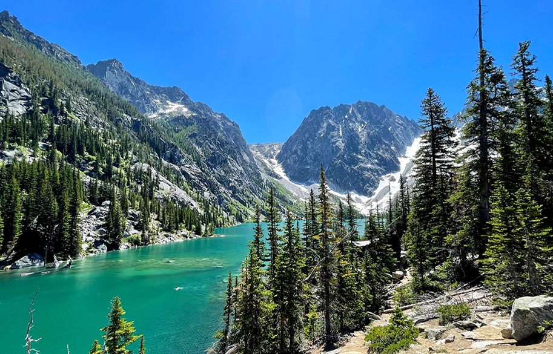
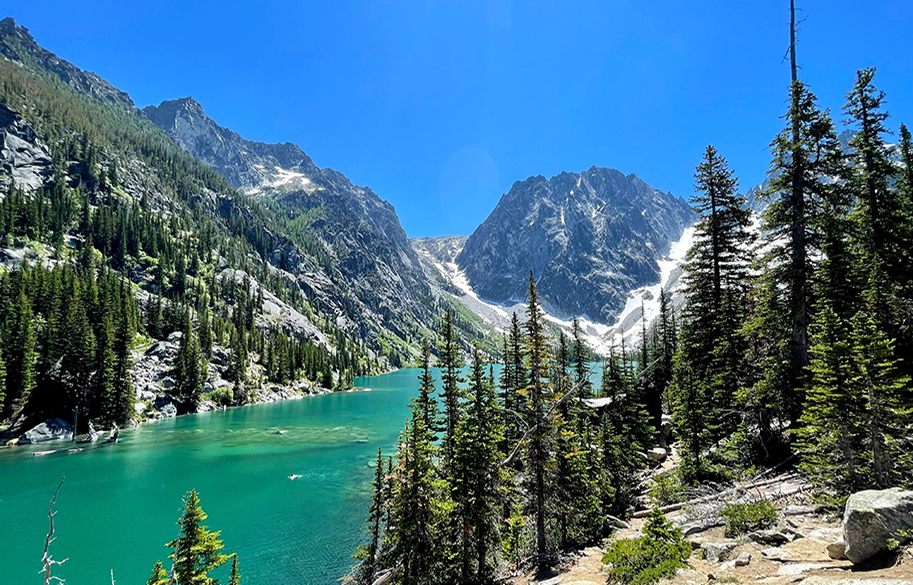

A Glimpse into My World of Hobbies

 

My hobbies and interests are windows to the joy and peace I find in the world. From the serene beaches of Santa Barbara, where the waves whisper tales of endless possibilities, to the magical realms of Disneyland, where every corner holds a story, my adventures are a testament to my love for exploring and experiencing the beauty around me.
Traveling to places near and far has always been a passion of mine. Whether it's a quick visit to Santa Barbara to bask in the sunlit beauty of its shores or indulging in the enchanting atmosphere of Disneyland, each journey brings a new chapter of joy and memories.
My love for hiking takes me to the heart of nature, where the mountains and trails speak of ancient wisdom and tranquility. It's in these moments, amidst the beauty of the natural world, that I find a profound sense of peace and connection to the earth.
These hobbies, from the thrill of rides at Disneyland to the serene walks along the beach and challenging hikes up the mountains, are not just pastimes. They are the essence of what makes life a beautiful adventure.